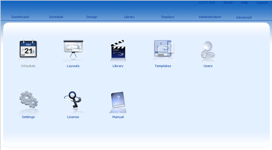

There are two types of dashboard which can be presented to a user on log in.
When a user first logs in they are presented with the Xibo Dashboard. This page presents all the options available to maintain your Xibo Network.

The dashboard icons allow the user to navigate to specific sections of the Xibo Interface, below is a discription of each icon.
The media manager dashboard is used to delegate specific tasks to users of the system. When a user has had their homepage configured they will no longer be able to access admin parts of Xibo. The media manager will replace the default dashboard with a simple dashboard, pictured below.
This icon provides the user with a direct link to the region of the template that they have been delegated. To learn more about setting users permissions click here.